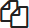

Capítulo 1: Instalación de Teldat Visualizer
En este capítulo se describe el proceso para realizar una instalación de Teldat Visualizer Enterprise. En lo que resta de la presente documentación nos referiremos a la máquina donde se va a instalar Teldat Visualizer como manager.
Instalación
Para la instalación del manager, el usuario dispondrá de una imagen ISO con la que se deberá arrancar la máquina en la que se va a instalar.
Al iniciar el asistente de instalación tendrá acceso a un menú tal y como se muestra a continuación:

Seleccionamos "Install Teldat Visualizer" para comenzar la instalación.
En pocos segundos nos aparecerá otro menú como el que se muestra a continuación:

En este paso el instalador nos preguntará la unidad de disco en la que deseamos realizar la instalación.
|
La unidad seleccionada será formateada por el instalador |
También en este menú se nos preguntará por la contraseña que deseamos configurar para el usuario "root" del sistema.
| Por defecto la contraseña de root es "teldat" |
Tras esto se procederá a la instalación de los paquetes de instalación del software en el disco duro.

Espere hasta que la instalación se haya completado al 100%.
Una vez finalizada la instalación, el sistema será reiniciado. Durante el primer arranque el sistema procederá a realizar una serie de acciones para configurarse por primera vez.
|
Estos procesos pueden tardar varios minutos |
Una vez que en la terminal nos aparezca la siguiente imagen, ya podremos acceder.

| Las credenciales por defecto son "usuario: root / password: teldat" |
Configuración inicial - Wizard
Una vez logueados en el manager, debemos ejecutar el comando rb_sysconf para realizar la configuración inicial.
Estas son las opciones que encontrará en la pantalla principal de este menú:
-
System Configuration: configuración del hostname, IP del Manager, hora y estado del Manager.
-
Network Configuration: creación de bondings, segmentos, DNS, rutas e IPMI. Para formar un cluster se necesitan al menos dos interfaces de red, una para gestión y otra para comunicación entre los nodos del cluster. Para instalaciones de un solo nodo, solo es necesaria una interfaz de red para la gestión.
-
Passwords: acceda a esta opción si desea modificar las contraseñas de los usuarios del sistema.
-
w) start simple wizard: inicia un asistente que le permitirá de forma sencilla y rápida realizar la instalación y configuración del Manager.
-
q) quit: Salir. Nos devuelve a la pantalla principal de configuración del sistema.

Para realizar la instalación automática del manager, usaremos la opción w) start simple wizard.
Existen una serie de opciones definidas por defecto (indicadas entre corchetes). Para aceptarlas tan solo tiene que pulsar Enter. No obstante, puede modificarlas manualmente en cualquier momento del proceso de instalación.
Mode, Hostname, DNS y NTP
-
Insert Hostname [rbmanager]. La opción que viene definida por defecto es la de rbmanager. Este es un nombre que identifica de manera clara y sencilla al Manager y su posición dentro del cluster.
-
Insert domain: [redborder.cluster]. Dominio definido por defecto.
-
Insert DNS Primary. Definido por defecto. El usuario podrá cambiarlo para indicar el servidor que provee DNS a su red y al que estará asociado el Manager.
-
Insert DNS Secondary (optional). Indicar DNS secundario de manera opcional. Se aconseja introducir un DNS alternativo que sustituya al DNS primario en caso de fallo del servidor.
| Es importante que se utilicen diferentes nombres para cada uno de los Managers que se van a unir al cluster. |
Una vez introducidos estos valores, el sistema le avisará de que los cambios han sido aplicados con éxito mediante el siguiente mensaje rotulado en verde: DNS and domain settings applied successfully.
Configuración de NTP y red de gestión
El siguiente paso es indicar el servidor de hora: NTP server [pool.ntp.org]: Si existe algún servidor NTP en su red que quiera utilizar, se debe indicar aquí. En caso contrario, se asignará uno por defecto.
Si sólo va a desplegar un manager, necesitará una única interfaz de red. Por el contrario, si va a desplegar un cluster con múltiples managers será necesario al menos reservar 2 interfaces de red:
-
Una para la red de gestión (Management IP address)
-
Otra para la red de sincronismo (Sync IP address)
En cada una de estas interfaces se configurará un bonding de red.
La configuración del bonding de gestión solicitará los siguientes datos:
-
Insert management IP address:
-
Insert management Netmask
-
Insert default gateway for this management interface (Y/n)
-
Insert a route for this bonding (y/N)?: Opción para insertar una ruta estática.
Una vez introducidos estos valores, el sistema le avisará de que el bonding ha sido creado con éxito.

Configuración de red de sincronismo
Si hemos configurado la máquina con 2 interfaces de red, a continuación tendremos que configurar el bonding para la red de sincronismo.

|
Esta parte no aparecerá si sólo hemos configurado una interfaz de red en la máquina |
Configuración de cluster y servicios externos
Como último paso se preguntan una serie de opciones de configuración relacionadas con la creación de un cluster de varios managers y la configuración de servicios fuera del manager. Para instalaciones on-premises, se recomienda dejar los valores por defecto.

Una vez finalizado, aceptamos y se iniciará el proceso de configuración.
|
Este proceso puede tardar desde varios minutos a 2 horas dependiendo de la capacidad del manager que se esté instalando. Esto es debido principalmente a que en la primera instalación hay que alimentar la base de datos con un número importante de valores iniciales, pero en las sucesivas actualizaciones ya no será necesario. |
Primera conexión a la aplicación web
Una vez se haya instalado y configurado el software, se podrá acceder a la aplicación web conectando mediante un navegador a la URL https://IP-de-gestion usando como usuario y password por defecto admin (usuario) y teldat123 (password). Para la conexión por consola, se puede hacer por consola directa (tty) o remota (ssh) usando el usuario root y el password suministrado durante el proceso de instalación, que por defecto es teldat.
Capítulo 2: Licencias
En este capítulo se describe el proceso para licenciar un manager de Teldat Visualizer.
Es necesario disponer de una licencia válida para poder dar de alta sensores y visualizar datos. Si intentamos dar de alta un nuevo sensor sin disponer de una licencia válida, nos aparecerá un mensaje indicando que es necesario solicitar una licencia.

Para acceder al menú de gestión de licencias tenemos que autenticarnos como administrador en el manager. A través de la interfaz web nos dirigimos a Tools → Licenses.

Dentro de esta vista podemos gestionar las licencias que tenemos cargadas en el manager.
En una instalación nueva nos encontraremos con la vista que se muestra arriba, donde aún no se ha cargado ninguna licencia.
Para obtener una licencia debemos pulsar en el botón "Request license". Nos aparecerá un formulario donde tendremos que indicar la cantidad de MB diarios que se van a consumir y el número máximo de sensores de cada tipo.
Una vez dispongamos del archivo de licencia (extensión .lic), para cargarla en el manager pulsaremos en el botón "Upload license" y subiremos el archivo.
A partir de este momento podremos ver la licencia cargada en ésta vista.
Dentro de esta vista podemos ver todas las licencias que tenemos cargadas y activas, la cantidad de bytes diarios consumidos o el límite de sensores de cada tipo que podemos usar.

Un dato importante dentro de la vista de licencias es la cantidad de bytes diarios consumidos en el día actual. Si superamos este valor, automáticamente se dejarán de procesar eventos para los sensores asociados.
Capítulo 3: Gestión de usuarios
El alta o modificación de los datos de los usuarios, la gestión de sus permisos o la creación de nuevos registros es posible desde la interfaz de gestión de usuarios, accesible en Tools → Users.
Para buscar un usuario concreto es posible introducir sus datos en el buscador, o bien, navegar por el listado alfabético que se muestra sobre los usuarios dados de alta.

Sólo los usuarios con el rol de Administrador de dominio tiene habilitada esta función para poder administrar a los usuarios de su dominio. El resto de usuarios sólo podrá visualizar las diferentes secciones de la plataforma, pero no modificar su contenido (salvo en el caso de su propio perfil de usuario).
Además de los administradores de dominio, existe un usuario Super Administrador que puede administrar a todos los usuarios registrados en la plataforma.
| Un usuario es Super Administrador sólo si es Administrador y su Top Domain es root |
En el cuerpo de esta vista encontramos un listado de los usuarios dados de alta en la plataforma redborder, dirección de correo electrónico, Top Domain (máximo nivel al que tiene acceso el usuario), número de veces que ha hecho login, la IP y la hora desde las cuales realizó el último acceso.
También podemos encontrar 2 botones en cada línea de usuario:
-
Botón de configuración de usuario
-
Botón para eliminar usuario
Para acceder directamente al menú de configuración de nuestro perfil de usuario, podemos hacerlo también pulsando sobre el nombre de usuario que aparece en la barra superior de herramientas, y pulsar sobre el botón My profile

En éste área podemos encontrar también el botón de ayuda Show help y de Logout. Además nos aparecerán notificaciones relacionadas con la actividad del usuario.
Configuración de usuarios
Haciendo clic en el botón de configuración de un usuario podemos modificar los siguientes datos y visualizar un resumen de su estado y actividad dentro de la plataforma.

En el menú de configuración de usuario nos encontraremos las siguientes secciones:
-
Menú principal
-
Administrator: Si lo activamos convertimos al usuario en Adminsitrador de dominio establecido en "Top Domain".
-
Nombre
-
Login/Username
-
Email
-
Top Domain: Dominio superior máximo al que el usuario puede acceder. El dominio de más alto nivel es root.
-
Another actions: Nos encontramos 3 botones para realizar las siguientes acciones:
-
Edit password: Cambiar la contraseña de usuario.
-
Recreate API Access Key: Regenerar la clave para acceso a la API Rest.
-
Copy API Key to clipboard: Copiar la clave de acceso a la API Rest.
-
-
-
Menú Personalization
-
User home page: Página de inicio que debe de aparecer tras el login de usuario.
-
Items per page: Número de eventos por defecto que se muestran en las secciones de visualización de datos.
-
Better letter size: Tamaño de fuente.
-
-
Menú Stats: Muestra estadísticas de uso de la plataforma por parte del usuario.
| Cada vez que deseemos modificar nuestra propia cuenta de usuario deberemos introducir la contraseña para poder aplicar los cambios. |
Capítulo 4: Sensores
En este capítulo se describe el procedimiento para agregar nuevos sensores y dominios al Manager de redborder.
Sensors se encuentra disponible en el margen superior derecho del menú de cabecera, junto a la sección Tools y la zona de usuario.

4.1 Sensors: menú y opciones
En este apartado se introduce de forma breve al menú Sensors y sus correspondientes opciones:
-
Submenú de la sección: en la que se encuentra las opciones disponibles para la configuración y gestión de los sensores.
-
Opciones (Options)
-
Añadir sensor (+Add sensor)
-
Añadir dominio (+Add domain)
-
Vista (View)
-
-
Área principal: la información que se muestra en este área dependerá de la vista seleccionada en View. Existen tres vistas disponibles para visualizar la organización de los sensores registrados en el Manager:
-
Árbol (Tree): listado que muestra la infraestructura de red según niveles de jerarquía y dependencia entre los elementos que la componen.
Al lado de cada uno de los elementos se muestran dos iconos que permiten realizar las acciones de edición y borrado de los mismos. Esta es la vista que se muestra por defecto.
-
Proxies clientes (Client Proxies): listado que muestra los proxies clientes por orden alfabético
-
Sensores Flow (Flow sensors): listado que muestra los sensores de tipo flow por orden alfabético.
-
| Cada vista presenta su propio menú de opciones y las diferentes posibilidades de creación y edición de sensores o dominios. |
4.2 Añadir un sensor
Para añadir un sensor debe seleccionar la opción +Add Sensor. En el menú desplegable se muestran los diferentes tipos de sensores que pueden añadirse al árbol. Seleccione el tipo de sensor en el menú desplegable y a continuación, complete la información que se solicita.
Para registrar sensores de Teldat, se deberá seleccionar tanto el tipo de sensor como su número de serie. En el caso de que el sensor no sea de Teldat, se deberá elegir un tipo de sensor genérico e identificarlo mediante la IP del sensor o su red.

|
En el momento en el que se crea un sensor en el manager, este pasa, por defecto, a colocarse como raíz, por encima del nivel de dominio. El usuario puede organizar su infraestructura de sensores en cualquier momento, arrastrando y soltando el sensor en el nivel en el que se quiera colocar. El sensor heredará de manera automática las propiedades del dominio raíz. |
4.3 Añadir un dominio
Para añadir un dominio se debe seleccionar la opción +Add Domain que se encuentra en el submenú superior derecho, elegir el tipo de dominio que se quiere añadir, y a continuación, rellenar los campos requeridos (estos variarán según el tipo de dominio a crear)


4.4 Editar un dominio
Para acceder a la edición de un dominio se debe hacer clic en el icono "Editar" situado a la derecha del dominio que desea editar desde la vista de árbol y seleccionar la opción Edit.
Estos son algunos de los datos que se pueden editar en un dominio. Dependiendo del tipo de dominio que se seleccione, aparecerán unos campos u otros:
-
General: muestra información general del sensor. Nombre (no editable), tipo de dominio y descripción.
-
Namespace Rules: permite añadir reglas que se aplicarán a nivel de dominio.
-
Servidores (Servers): En este apartado el usuario puede definir la configuración de los servidores Proxy y Syslog. Todos los valores que se muestran son los heredados por defecto. Sobreescribir en caso de que sea necesario.
-
Localización (Location): Localiza el sensor o el dominio en un mapamundi.
Capítulo 5: Visualización de datos
En esta sección el usuario puede realizar la visualización, análisis y gestión de los eventos recogidos.
5.1 Traffic: menú y opciones
En el área de análisis de la barra de menú (lateral izquierdo), encontramos las diferentes secciones que corresponden a las Apps que tengamos integradas en la plataforma.
A continuación veremos las diferentes opciones de visualización de datos, tipos de gráficas, granularidad (nivel de detalle temporal con el que se agregan los eventos) y dimensiones que se pueden combinar para obtener un visor de tráfico de red completamente personalizado.

5.1.1 Opciones disponibles en el submenú de la sección Traffic

-
Filtros (Filters): permite al usuario aislar una porción de información para conseguir mayor grado de detalle. En esta pestaña, el usuario podrá visualizar el número de filtros que se han aplicado y realizar las siguientes acciones sobre los mismos:
-
Crear un filtro avanzado (Advanced Search)
-
Crear una alarma en base a las condiciones de los filtros aplicados (Create an alarm)
-
Crear un widget basado en los filtros aplicados e incluirlo en un dashboard o informe (Create a widget on)
-
-
Vistas: ofrece diferentes opciones de visualización de la información. Se explicarán con detalle posteriormente.
-
Agregación: son los diferentes valores o unidades de medida en las que se pueden mostrar los datos. Por ejemplo, flows por segundo (flows/s) o bytes por segundo (bps)
-
Granularidad: indica el grado de detalle temporal con el que es posible visualizar los datos. El mínimo valor de granularidad es un minuto.
-
Tipo de gráfica: muestra los diferentes tipos de gráficas entre los que podemos elegir para mostrar los datos. Los tipos de gráficas disponibles varían según el tipo de vista seleccionada. Estos son los siguientes:
-
Area
-
Stacked
-
Line
-
Bars
-
SBars
-
-
Opciones: en este apartado el usuario podrá realizar diferentes acciones para la gestión de los datos que se muestran en esta sección. Las opciones varían según el tipo de vista seleccionada.
-
Mostrar total (Show Total)
-
Exportar a CSV (Export to CSV)
-
Máquina del tiempo (Time Machine)
-
Guardar las pestañas como predeterminadas (Save tabs as default)
-
Ordenar agregaciones (Sort Aggregations)
-
Ordenar columnas (Sort columns)
-
-
Atributos: Los eventos recibidos por el Manager están compuestos por duplas del tipo "columna:valor". Los valores que se indican en cada columna pueden entenderse como datos propios del evento, que son los que realmente nos aportan información. Estos son llamados "atributos".
Los atributos pueden mostrarse de varias maneras: en forma de pestañas o de columnas. (Add tabs/Columns) dependiendo de la vista que estemos consultando.
|
A lo largo de este documento podrán encontrarse referencias al concepto de columna como "atributo" o "dimensión". |
5.1.2 Cuerpo de la pantalla: filtrado por rango de tiempo, pestañas de atributos y vistas.
Filtrado por rango de tiempo: acceso directo a los eventos filtrados en base a un periodo de tiempo.
Existe la posibilidad de seleccionar un rango de fechas diferente a las que se ofrecen por defecto. Dependiendo de las necesidades del usuario, podrá realizar una selección de tiempo personalizada a través de la opción Custom. Más adelante se especificará el procedimiento a seguir para realizar un filtro temporal personalizado.
Pestañas de atributos: clasifican la información del tráfico de red por atributos. Navegando por cada una de las pestañas podemos conocer en detalle los valores asociados a los atributos que hayamos seleccionado.
| El usuario puede variar el orden en el que se muestran las pestañas en cualquier momento. Para ello, debe arrastrar la pestaña y soltarla en la posición que desee. |

Vista: en esta zona se muestran los datos según la vista y tipo de gráfica seleccionadas. Al posicionar el cursor sobre cualquiera de los puntos que componen la gráfica, aparece un cuadro de diálogo que muestra en detalle la información para ese instante de tiempo, agregación y atributo.

5.1.3 Resumen, buscador y tabla de datos
Resumen: bajo el área de Vista se encuentra un resumen relativo a todos los datos cargados que aparecen tanto en la vista como en la tabla de datos. En este resumen se indican, por este orden:
-
Total: valor total de la agregación de todos los datos cargados.
-
Selected: valor total de la agregación de todos los datos cargados y seleccionados.
-
Visible Rows: número de filas de datos cargadas.
-
Visible/Total: porcentaje del valor agregado de los datos cargados sobre el valor agregado del total de datos.
Buscador: permite realizar una búsqueda por atributo. Las búsquedas se convierten en filtros automáticamente tal y como veremos más adelante.
Tabla de datos: muestra los valores clasificados por tipo de atributo seleccionado. Por ejemplo, cada fila puede estar mostrando cada una de las IPs de origen (Columna/Atributo: SRC Address) con el detalle del porcentaje de bytes (Agregación) que está consumiendo ese elemento dentro de la red. Para el análisis aislado de un elemento de esta tabla es necesario hacer clic sobre el elemento que se desee filtrar. Para el análisis de más de un elemento se deberá realizar una selección múltiple, manteniendo pulsada la tecla Ctrl y seleccionando distintos elementos o, si se desea seleccionar un rango, utilizando la tecla Shift.
5.2 Filtrar eventos
La opción Filters permite el filtrado de eventos según criterios definidos por el usuario. Estos filtros pueden ser almacenados para ser usados posteriormente como plantilla para la visualización de los eventos.
Opciones de filtrado:
-
Filter Zoom: tras seleccionar un rango temporal en la vista gráfica, es posible filtrar por ese rango de tiempo haciendo clic en el botón Filter Zoom que aparece en las opciones del submenú.
-
Filtrar por valor de atributo (Filter Selected): permite filtrar los elementos de la tabla seleccionados.
-
Excluir por valor de atributo (Exclude Selected): permite excluir los elementos de la tabla seleccionados.
-
Búsqueda avanzada (Advanced Search): permite establecer condiciones para realizar una búsqueda avanzada que actúe a modo de filtro. Muy útil para aislar y analizar datos muy concretos.
Para guardar un filtro basta con seleccionar la opción +Save Current Filter.
Acciones para los filtros:
Además de la opción de búsqueda avanzada (Advanced Search), el menú Filters muestra las siguientes opciones:
-
Crear alarmas (Create an alarm): nos permite configurar una alarma en base a los filtros aplicados.
-
Crear un widget en (Create a widget on): crea un widget a partir de los filtros aplicados que se puede incluir en dashboards o informes.
5.2.1 Filtro temporal personalizado
Es posible aislar los eventos correspondientes a un periodo de tiempo determinado para analizar con mayor grado de detalle los datos vinculados al atributo seleccionado.
Existen cinco maneras de realizar un filtrado temporal:
-
Filtrado por rango de tiempo
-
Filter Zoom
-
Filtro personalizado
-
Búsqueda avanzada
-
Filtrado por atributo
Filtrado por rango de tiempo
Una manera muy sencilla y rápida de visualizar tan solo los eventos correspondientes a un periodo de tiempo concreto es seleccionar algunas de las opciones que nos ofrecen las pestañas de la línea temporal de filtrado:

Filter Zoom
El usuario puede seleccionar un lapso de tiempo determinado de manera manual. Este filtro es muy útil para observar en detalle un evento. Para ello, hacer clic con el ratón en un punto determinado de la gráfica, arrastrar hasta el instante temporal deseado y soltar. De este modo, tendremos la vista para ese rango temporal y la tabla inferior mostrará tan solo los datos incluidos en esta franja.
En el submenú de sección aparecerá indicado Filter Zoom.

Filtro personalizado (Custom)
La pestaña Custom de la línea de filtrado por rango de tiempo permite realizar un filtrado personalizado. Solo con arrastrar el ratón sobre la barra temporal es posible indicar una fecha de incio y de fin para el filtrado.
Hacer clic en Submit para aplicar filtro.
Búsqueda avanzada (Advanced Search)
Al hacer clic en la pestaña Filters se despliega un submenú en el que encontramos la opción Advanced Search.
Esta es la opción que permite mayor grado de detalle, puesto que es el propio usuario el que determina las condiciones de la búsqueda, y por tanto, de filtrado.
Filtrado por atributo (Filter Selected)
Existen dos maneras de convertir un valor de un atributo en un filtro:
-
Buscador: introducir el valor del atributo que se desea buscar y pulsar la tecla Enter.
De manera automática se incluirá un filtro con el valor elegido. Se pueden incluir tantos filtros como búsquedas se realicen. Es posible eliminar el filtro desde la opción Filters.
-
Selección filas de la tabla: es posible seleccionar una o más filas de la tabla simplemente hacer clic en cada una de ellas. Las filas seleccionadas aparecerán sombreadas en amarillo.
Una vez seleccionadas las filas seleccionar la opción Filter Selected para obtener la vista de los elementos filtrados. Para eliminar el filtro es necesario pulsar el botón Exclude Selected.
Es posible realizar acciones a nivel individual sobre cada uno de los elementos de la tabla. Haciendo clic sobre un elemento se despliega un submenú con las siguientes opciones:
Filter: añade el filtro correspondiente para incluir el elemento de los datos presentados.
Exclude: añade el filtro correspondiente para excluir el elemento de los datos presentados.
5.3 Vistas: múltiples opciones para visualizar los datos
Las vistas ofrecen múltiples perspectivas para la visualización de los datos asociados al tráfico de red. Las vistas que se encuentran disponibles en la App Traffic son las siguientes:
-
Tops: agregación de los eventos en base a una unidad para mostrar los más destacados. Suma el total de datos de diferentes eventos para mostrarlo como uno único.
-
Raw: vista de la totalidad de datos de los eventos en bruto, clasificados por atributos y franjas de tiempo.
-
Compare: comparación de intervalos de tiempo para analizar diferencias en el estado de la red.
-
Unique: muestra los diferentes elementos que han interactuado con la red según el atributo.
| Las opciones que se muestran en la pestaña Options y los atributos Add tab/Columns variarán según el tipo de vista elegida. |
| No olvide combinar las vistas con los diferentes tipos de gráficas. De este modo obtendrá múltiples posibilidades de análisis de los datos. |
5.3.1 Tops
La vista Tops nos permite visualizar cuáles han sido los eventos más destacados según el intervalo de tiempo que se haya seleccionado. Lo que visualizamos en la gráfica es la suma del total de dichos eventos mostrados como un único evento. Si pasamos el ratón por encima la gráfica, veremos el desglose del evento por día, hora y tipo de dimensión o atributo que se esté consultando.

5.3.2 Raw
Esta vista nos ofrece los datos de los eventos en bruto, por tanto, visualizaremos la totalidad de eventos por atributos segmentados por franjas de tiempo.
La tabla de datos recogerá, por tanto, todos los eventos ordenados en el tiempo. Si desea ver más eventos, basta con ir al final de la tabla y aparecerán eventos anteriores.


|
Como se puede observar en la imagen, el tipo de gráfica ideal para la vista Raw es el de flujo de datos o Streams. En la vista Raw los atributos se muestran en columnas. |
5.3.3 Compare
Esta vista ofrece una comparativa de la evolución de los eventos entre distintas horas, días, semanas o meses. De este modo, el usuario puede identificar de forma rápida el momento de mayor uso de la red en función de distintos parámetros, como pueden ser los bytes consumidos, los paquetes transmitidos o los flujos recibidos.
En la tabla de datos se muestra la suma de los valores de cada intervalo de tiempo.

5.3.4 Unique
A través de la vista Unique, el usuario podrá obtener información acerca de los elementos diferentes que han interactuado, al menos, una vez con la red en un periodo de tiempo determinado.
También, es posible seleccionar el grupo de atributos que se desea analizar mediante la opción Group by.
5.4 Tipos de agregación
El tipo de agregación permite que el usuario seleccione la unidad de medida en la que desea que se muestre la información.
Estas son las diferentes unidades y métricas que encontrará en esta pestaña:
-
bps
-
bytes
-
packets
-
packets/s
-
flows
-
flows/s

| Optimice sus métricas combinando diferentes tipos de agregación con las opciones de granuralidad (nivel de detalle temporal) que se encuentran disponibles. |
5.5 Granularidad
Llamamos granularidad al grado de detalle con el que podemos visualizar los eventos. Las opciones de granuralidad varían según el rango de tiempo que se esté mostrando (1h., 2h., last week, last month, all, etc.).
| La vista Raw es la más indicada si se desean observar los datos en detalle. |
5.6 Tipos de gráficas
Es posible seleccionar el tipo de gráfica con el que se desean visualizar los datos obtenidos en las diferentes vistas. Las opciones son muy similares a las que se muestran en el proceso de creación de widgets personalizados del capítulo dedicado a los Dashboards.
Las gráficas que se encuentran disponibles en cada momento dependerán de la vista seleccionada. En todos los tipos de gráficas se realiza una representación de los valores seleccionados en función del tiempo, de la granularidad y agregación seleccionadas y de las distintas opciones disponibles en función de la vista. A continuación se describen los distintos tipos de gráficas disponibles.
Stacked: composición de áreas apiladas, donde cada área representa el perfil temporal de un valor seleccionado.
Area: composición de áreas superpuestas, donde cada área representa el perfil temporal de un valor seleccionado.

Line: composición de líneas superpuestas, donde cada línea representa el perfil temporal de un valor seleccionado.

Bars: composición de conjuntos de barras superpuestas, donde cada conjunto de barras de distinto color representa el perfil temporal de un valor seleccionado.

SBars (Stacked Bars): composición de conjuntos de barras apiladas, donde cada conjunto de barras de distinto color representa el perfil temporal de un valor seleccionado.

Streams: composición de flujos, donde cada flujo representa las relaciones entre distinos atributos. Esta gráfica solo está disponible para la vista Raw. En la imagen inferior se muestran los flujos de tráfico de un sensor entre IPs LAN y WAN.

5.7 Opciones
Cada una de las vistas presenta una serie de opciones que le permiten al usuario, entre otras acciones, visualizar el total del tráfico, exportar los datos a CSV o llevar al manager a un estado anterior para poder analizar comportamientos pasados.
A continuación se enumeran todas las opciones disponibles en esta pestaña. El usuario debe tener en cuenta que estas opciones variarán según la vista seleccionada previamente.
-
Mostrar total (Show Total): al seleccionar esta opción se muestra en la gráfica una línea gris discontinua que representa la suma de las agregaciones de todos los atributos. Cuando esta opción se encuentra activa, en el listado de opciones se cambia esta opción por Hide Total. Disponible en las vistas Tops y Unique.
-
Mostrar total de los filtrados (Show Total Filtered): al seleccionar esta opción se muestra en la gráfica una línea gris discontinua (más clara que la de la opción anterior) que representa la suma de las agregaciones de todos los atributos resultantes de aplicar los filtros seleccionados. Cuando esta opción se encuentra activa, en el listado de opciones se cambia esta opción por Hide Total Filtered. Disponible en la vista Tops.
-
Exportar a CSV (Export to CSV): el usuario obtendrá un fichero de descarga en formato CSV que incluye los datos correspondientes al atributo que se seleccione, pudiendo fijar un límite de las filas que se incluirán en el archivo. Disponible solo para las vistas Tops, Raw y Unique.
-
Máquina del tiempo (Time machine): envía al manager a un estado anterior. Al seleccionar esta opción el usuario podrá visualizar los datos tal y como si estuviera viéndolos en el día y hora del momento pasado que haya indicado. Disponible para todas las vistas.

-
Guardar pestañas como predeterminadas (Save tabs as default): al aplicar esta opción, las columnas o pestañas de datos que se hayan incluido para el análisis se mostrarán por defecto en las nuevas consultas que se realicen. Disponible para las vistas Raw, Unique y Tops.
-
Orden de las agregaciones (Sort Aggregations): mediante esta opción el usuario puede elegir el orden en el que se mostrarán las agregaciones disponibles. Disponible para las vistas Raw, Tops y Unique.

-
Orden de las columnas (Sort Columns): mediante esta opción el usuario puede elergir el orden en el que se mostrarán las columnas disponibles. Disponible únicamente para la vista Raw.

-
Recargar (Start Reloading): activa la cuenta atrás para que se efectúe la recarga de los datos. En cualquier momento, el usuario puede detener esta recarga seleccionando Stop Reloading (opción que sustituye a Start Reloading una vez que ésta se ha activado). En el extremo izquierdo de la barra de sección aparecerá una cuenta atrás indicándole el tiempo de espera hasta la recarga. Disponible para la vista Raw.

5.8 Atributos: pestañas y columnas
Los atributos nos ayudan a realizar un análisis exhaustivo y personalizado de cada uno de los elementos que intervienen en el tráfico de la red que se está analizando.
Estos se organizan en pestañas o columnas según la vista que estemos consultando. Las opciones que se muestran son comunes a todas las vistas salvo para el caso de Compare (ofrece solo la posibilidad de comparación no por atributos sino por semanas o meses).
A continuación enumeramos los atributos que el usuario tiene disponibles y los diferentes aspectos que puede consultar de cada uno de ellos:
-
Application
-
Application
-
Engine
-
HTTP User Agent
-
Host
-
Host L2
-
Referer
-
Referer L2
-
Selector
-
Product Type
-
URL
-
-
Flow
-
Direction
-
-
Interface
-
LAN Interface
-
LAN Description
-
WAN Interface
-
WAN Description
-
-
Location
-
WAN IP Country
-
WAN IP AS
-
WAN IP MAP
-
Service Provider
-
Namespace
-
Deployment
-
Market
-
Organization
-
Campus
-
Building
-
-
Network
-
Conversation
-
LAN IP
-
LAN IP Name
-
LAN Net Address
-
WAN IP
-
WAN IP Name
-
Protocol
-
TOS
-
Sensor Type
-
Scatterplot
-
-
Transport
-
LAN L4 Port
-
WAN L4 Port
-
TPC flags
-
-
UUID
-
Service Provider UUID
-
Namespace UUID
-
Deployment UUID
-
Market UUID
-
Organization UUID
-
Campus UUID
-
Building UUID
-
Capítulo 6: Dashboards
6.1 Opciones del Dashboard
La primera opción que encontramos en el área de análisis de la barra de menú es la de Dashboard. Esta es la opción que se encuentra seleccionada por defecto al ingresar a la web del manager.
La sección dashboard presenta múltiples opciones:
-
Listado de dashboards disponibles: en la primera parte del menú de dashboards, el usuario visualizará los dashboards que se han creado y que están disponibles para su perfil. Al lado de cada uno de los dashboards se encuentran dos iconos:
-
 : permite visualizar y editar la configuración general del panel.
: permite visualizar y editar la configuración general del panel. -
 : permite clonar el dashboard seleccionado.
-
-
Añadir e importar dashboards (Add dashboard/Import dashboard): estas dos opciones permiten añadir un nuevo dashboard personalizado e importar aquellos ya creados. Cualquier usuario podrá exportar un dashboard a un fichero y compartirlo con otros usuarios para que puedan importarlo en el momento que deseen.
-
Añadir widget (Add widget): esta opción permite añadir los widgets que se deseen para personalizar el dashboards.
-
URL de dashboard (Dashboard URL): esta opción copia el enlace del actual dashboard al portapapeles del sistema.
-
Bloqueo (Locked/Unlocked): el usuario tiene la opción de bloquear/desbloquear el dashboard que esté consultando para que ningún otro usuario con permisos pueda editarlo.
-
Máquina del tiempo (Time Machine): esta opción permite "viajar en el tiempo" y visualizar los resultados de las métricas de un día y hora determinados por el usuario a modo de histórico.

6.1.1 Editar y clonar dashboards disponibles
Editar dashboard: Configuración general (General Settings)
El usuario podrá modificar en cualquier momento la información asociada a cada uno de los dashboards disponibles seleccionando la opción Configuración general haciendo clic en el icono  .
.
Información editable de la configuración general del dashboard:
-
Nombre del dashboard (Name)
-
Establecer el dashboard como predeterminado (Set this dashboard as default)
-
Estructura de visualización de los widgets y métricas del dashboard (Layout)
-
Descripción del contenido del dashboard (Description)
-
Color de fondo (Background Color)
-
Usuarios que pueden visualizar el dashboard y permisos de edición (Dashboard users): añadir y eliminar
-
Dominios que se incluyen en el dashboard (Dashboard domains): añadir y eliminar
Además, en el margen inferior de la pantalla el usuario verá una serie de opciones disponibles:
-
Actualizar dashboard (Update dashboard)
-
Cancelar (Cancel)
-
Borrar (Delete)
-
Convertir a informe (Convert to report)
-
Exportar dashboard (Export dashboard): el sistema creará un archivo comprimido para su descarga; paso necesario en caso de que se quiera realizar una importación.

-
Clonar dashboard (Clone dashboard): es posible clonar (copiar) los dashboards con el fin de enerlo disponibles para diferentes usuarios, importarlo, etc. Para ello, basta con asignarle un nombre al dashboard copiado.
6.1.2 Añadir dashboard
Los dashboards permiten tener un resumen visual que incluye los principales KPIs que son necesarios para el análisis de una infraestructura de red. El usuario puede combinar una serie de widgets que le permitan, a simple vista, obtener información muy valiosa sobre las tendencias, cambios y excepciones asociadas al tráfico que se produce o pasa por su red.
Para crear un nuevo dashboard es necesario seleccionar la opción Add dashboard. A continuación, introducir una serie de datos de configuración general y guardar los cambios mediante el botón Create dashboard. El primer paso para crear un dashboard personalizado es la creación de un panel en blanco al que, posteriormente, se le añadirán aquellos widgets que cumplan con nuestras necesidades de visualización.
Para crear un nuevo dashboard debemos indicar una serie de preferencias en la interfaz de Configuración general (General Settings), anteriormente descrita para la edición de dashboards.

6.1.3 Importar dashboard
La opción Importar dashboard es muy útil en el caso de que queramos compartir dashboards con otros usuarios, o incorporar al manager información obtenida de otras aplicaciones compatibles.
| Para importar un dashboard, es necesario que este, previamente, haya sido exportado como fichero comprimido y se encuentre disponible entre nuestros archivos. |
Debe seleccionar el archivo que se desea importar y a continuación hacer clic sobre la opción Import dashboard. Una vez que hayamos realizado la importación, encontraremos este nuevo dashboard dentro del listado de dashboards disponibles.

6.1.4 Añadir widget: personalización de los dashboards
El usuario puede crear y añadir widgets a sus dashboards con el fin de personalizar al máximo la visualización de los datos obtenidos por las diferentes Apps. Es posible incorporar tanto widgets preconfigurados como crear widgets 100% personalizados.
El primer paso consiste en seleccionar el tipo de widget que se quiere añadir. Existen tres tipos de widgets dependiendo del tipo de información que queramos visualizar:
-
Apps: visualización de los datos recibios por las diferentes Apps.
-
Traffic
-
-
Estado: visualización de la configuración y estado de las máquinas e infraestructura de la red.
-
Infrastructure
-
-
Formato: permite configurar el contenido y el formato de los widgets: texto, imágenes, URL, etc.
-
Shapes
-
6.1.4.1 Personalizar un widget de producto
Algunos de los widgets que el usuario encuentra disponibles para añadir al dashboard del manager permiten una personalización completa.
|
Los eventos recibidos por el Manager están compuestos por duplas del tipo "columna:valor". Los valores que se indican en cada columna pueden entenderse como datos propios del evento, que son los que realmente nos aportan información. El primer paso para personalizar un widget consiste en seleccionar el modo de visualización de los datos, pudiendo elegir además, vistas en las que se representa la cardinalidad de los mismos. |
Configuración de widgets según vistas de eventos:
-
Bandwith Line: es un widget predefinido que muestra el uso del ancho de banda en bps. Muestra una gráfica simple. Es característico de la app Traffic.
-
Bandwith: es como Bandwith line ofreciendo un contenido más detallado. Es característico de la app Traffic.
-
Map: muestra información de geoposicionamiento. Es característico de la app Traffic
-
RAW: muestra los eventos en bruto (sin agregación).
-
Tops: agrega los eventos en base a un atributo para mostrar los más destacados, de manera que lo que se muestra es la suma del total de datos de diferentes eventos para mostrarlos como uno único.
-
Compare: comparativa en el tiempo (horas, días, semanas y meses) de los eventos más destacados.
Un ejemplo de uso sería el de comparar en distintos días la evolución temporal del tráfico para una aplicación en concreto.
-
Performance Index: permite definir un indicador donde visualizar el rendimiento de los eventos que se deseen.
Configuración de widgets según cardinalidad:
-
Single Unique: mediante esta opción se aislan las ocurrencias o eventos de una columna para un momento determinado.
-
Grouped Unique: mediante esta opción se aislan las ocurrencias o eventos de una columna para un momento determinado agrupados según determinados criterios.
6.1.4.2 Personalizar un widget de estado
El usuario puede elegir entre cuatro tipos de widgets aplicables a las opciones de configuración del manager. La opción de Infrastructure permite seleccionar el modo en el que se va a visualizar la información sobre configuración y estado de la infraestructura de red:
-
Sensor: Mapa/Árbol
-
Clúster: Diagrama/Tabla
-
Alarm: insertar detalles de configuración en el formulario adjunto
-
Monitor: Serie/Valor
6.1.4.3 Widgets de formato
La opción Shapes nos permite editar e insertar elementos auxiliares en nuestros widgets tales como: texto, imagen, forma del widget e incrustar una URL personalizada.
Para incorporar cualquiera de estos elementos a los widgets, basta con completar el formulario que aparezca en cada caso y aplicar los cambios mediante la opción Create Widget.
6.1.5 Time machine
Esta opción devuelve a la máquina al estado en el que se encontraba en el día y hora que determinemos. El usuario visualizará los datos como si fueran en tiempo real.
Este "viaje en el tiempo" nos ofrece un grado de precisión máximo en el análisis ya que se puede indicar el minuto exacto que se desea consultar.

6.1.6 Clonar, editar, recargar y eliminar widget desde el dashboard
Desde el dashboard el usuario tiene acceso directo a los widgets. En la esquina superior derecha aparece un menú que da acceso directo a las siguientes acciones
-
Clonar (Clone): permite duplicar el widget e incorporarlo directamente en el dashboard que seleccione el usuario.
-
Editar (Edit): da acceso a la configuración general del widget para modificar aquellos campose que se deseen.
-
Recargar (Reload): actualización de los datos.
-
Eliminar (Delete).

| Cuando seleccione la opción Delete, el sistema le mostrará una pregunta de confirmación. En caso de que elimine un widget por accidente, recuerde que siempre puede acudir a la opción "Añadir widget" para volver a insertarlo o duplicar alguno de similares características y editarlo a continuación. |
Capítulo 7: Actualización del cluster
En este capítulo se describe el procedimiento para actualizar un cluster de servidores Manager de redborder.
El procedimiento será diferente en función de si se cuenta o no con conexión a Internet desde el cluster de redborder.
Actualización desde repositorio remoto
Para realizar la actualización de un cluster en el que se dispone de acceso a Internet no será necesario contar previamente con una ISO de redborder. Tan sólo tendremos que ejecutar el script rb_cluster_update.sh en el nodo manager.
# rb_cluster_update.sh
En primer lugar nos preguntará qué paquetes deseamos actualizar. Podemos optar por actualizar los paquetes del sistema, o los paquetes de redborder (lo cual supone la actualización de redborder). En este caso serán los paquetes de redborder (opción 2).
################################################################## # redBorder cluster ready to be updated ################################################################## Which packages would you like to update: 1.- system packages 2.- redBorder packages 3.- both 4.- nothing Choose an option: 2
A continuación podremos indicar si deseamos actualizar desde un repositorio remoto (para lo cual necesitamos conexión a internet), o desde un repositorio local.
En este caso nos interesa actualizar el sistema desde un repositorio remoto, por lo que indicaremos la opción 1.
Available repositories: 1.- remote (repo: http://repo.redborder.com/teldat) 2.- local Choose an option: 1
En el siguiente paso, tras detectar la versión actual del sistema, se preguntará por la versión a la que se desea actualizar, a partir de las que se tenga disponible en el repositorio remoto.
Detecting available redBorder versions: [ OK ] 1.- 3.1.79-5 Choose a valid version: 1
A continuación el script nos mostrará el orden en que se vana actualizar los nodos del cluster.
INFO: The following nodes will be updated in the following order: * node1 * node2 * node3 Are you sure you want to continue? (y/N) y
A partir de este momento se procederá a realizar la actualización del cluster.
Actualización desde ISO (offline mode)
Para realizar la actualización de un cluster que no tiene acceso a Internet será necesario contar previamente con la ISO de redborder de la versión a la que se desea actualizar. A partir de la ISO se realizará una actualización del repositorio local del nodo master del cluster, el cual será usado por los restantes nodos que conforman el cluster.
Lo primero a realizar es ejecutar el script rb_cluster_update.sh.
Una vez se ejecute el script rb_cluster_update.sh entraremos en un “wizard” donde seremos guiados para realizar la actualización.
En primer lugar nos preguntará qué paquetes deseamos actualizar. Podemos optar por actualizar los paquetes del sistema, o los paquetes de redborder (lo cual supone la actualización de redborder). En este caso serán los paquetes de redborder (opción 2).
################################################################## # redBorder cluster ready to be updated ################################################################## Which packages would you like to update: 1.- system packages 2.- redBorder packages 3.- both 4.- nothing Choose an option: 2
A continuación podremos indicar si deseamos actualizar desde un repositorio remoto (para lo cual necesitamos conexión a internet), o desde un repositorio local.
En este caso nos interesa actualizar el sistema desde un repositorio local, por indicaremos la opción 2.
Available repositories: 1.- remote (repo: http://repo.redborder.com/teldat) 2.- local Choose an option: 2
A continuación el programa nos preguntará si deseamos actualizar el repositorio local a partir de una ISO de redborder. Esto nos permitirá incluir una nueva versión de redBorder en el repositorio local y tenerla disponible para que sea usada por todos los nodos del cluster.
Would you like to update local repo from a new ISO file? (y/N) y Set redBorder ISO path: /tmp/redBorder-3.1.79-5-x86_64-6.5-enterprise.iso Mounting ISO and copying files in local repo
En el siguiente paso, tras detectar la versión actual del sistema, se preguntará por la versión a la que se desea actualizar, a partir de las que se tenga disponible en el repositorio local.
Detecting available redBorder versions: [ OK ] 1.- 3.1.79-5 Choose a valid version: 1
Una vez seleccionamos la versión a actualizar, el programa nos informará de los nodos del cluster que van a ser actualizados y nos pedirá confirmación antes de comenzar el proceso.
INFO: The following nodes will be updated in the following order: * node1 * node2 * node3 Are you sure you want to continue? (y/N) y
A partir de este momento se procederá a realizar la actualización del cluster.
Capítulo 8: Client Proxy
8.1 Introducción
El client proxy (proxy cliente) es un tipo especial de sensor. Más que un sensor, en realidad se trata de un sistema que representa al cluster allá donde se instale y al que se le pueden asociar sensores directamente. Su principal utilidad es poder instalarlo y asociarle sensores en redes e instalaciones que, por política de seguridad, no pueden acceder directamente al cluster de managers (o al servicio en la nube).
8.2 Instalación
Para la instalación, se procederá de un modo muy similar al manager. Usando la misma imagen ISO, cuando arranuqe y muestre el menú de instalación, seleccionaremos "Install Client Proxy".
Tras esto, nos saldrá una lista de preguntas con respuestas por defecto, igual que el proceso de instalación del manager, salvo que al final nos preguntará por la URL del cluster al que conectar, con la URL de la cloud valor por defecto (visualizer.networkcloudmanager.com)

Comienza por fin el proceso de instalación.
Una vez finalizado, el sistema se reiniciará y nos aparecerá la terminal con el siguiente contenido:
En él, aparece información relativa al UUID asignado al client proxy, su dirección IP, la MAC e información sobre los servicios del cluster a los que representa:
8.3 Registro
Tras la instalación del client proxy, se requiere un paso más que consistirá en el registro del equipo en el cluster (ya sea on-premise o cluster en la nube). Para que este paso se cumpla con éxito, el client proxy deberá tener acceso https/443 al cluster (on-premise o en la nube) sin restricciones.
El primer paso para el proceso de registro consiste en que el client proxy se identifica en el cluster como un sensor sin reclamar. Como el UUID del client proxy es conocido en el proceso de instalación, deberemos usar dicho UUID para localizar el equipo en la lista de sensores sin reclamar. Para ello, entramos en la web de redborder y vamos a Sensors → add sensor → Claim proxy.

A continuación le ponemos un nombre y el UUID que mostró en la instalación.
Si el client proxy con ese UUID realmente está entre los no reclamados, el sistema lo localizará y lo asignará al namespace al que pertenece el usuario como un sensor más.
En principio, mientras se esté configurando así se indicará en su estado.

Si todo ha ido bien, una vez terminada la configuración y el proceso de registro y reclamación, aparecerá su nuevo estado:
8.4 Gestión de sensores
Se pueden dar de alta sensores gestionados por el client proxy de una manera muy similar a como se hace en el cluster directamente. Para ello, hay que ir a la vista de sensores, y en la fila del client proxy, a la derecha, aparece el botón del menú, al hacer click aparecerán las opciones siguientes:
-
Edit: Accede a la vista de información del client proxy.
-
Add Sensor: Permite añadir sensores al client proxy.

8.5 Actualización
La actualización del client proxy se realiza de igual forma que cualquier paquete de software de la distribución, mediante un repositorio yum. Para ello, ejecutaremos:
[root@cp-9355 ~]# yum update redBorder-proxy
Loaded plugins: fastestmirror
Loading mirror speeds from cached hostfile
* base: mirror.tedra.es
* elrepo: mirrors.coreix.net
* epel: mir01.syntis.net
* extras: mirror.tedra.es
* updates: mirror.tedra.es
Setting up Update Process
Resolving Dependencies
--> Running transaction check
---> Package redBorder-proxy.x86_64 0:3.1.79-7 will be updated
---> Package redBorder-proxy.x86_64 0:3.1.79-9 will be an update
--> Finished Dependency Resolution
Dependencies Resolved
===============================================================================================
Package Arch Version Repository Size
===============================================================================================
Updating:
redBorder-proxy x86_64 3.1.79-9 redBorder 220 M
Transaction Summary
===============================================================================================
Upgrade 1 Package(s)
Total download size: 220 M
Is this ok [y/N]: y
Downloading Packages:
redBorder-proxy-3.1.79-9.x86_64.rpm | 220 MB 00:21
Running rpm_check_debug
Running Transaction Test
Transaction Test Succeeded
Running Transaction
Warning: RPMDB altered outside of yum.
Updating : redBorder-proxy-3.1.79-9.x86_64 1/2
chef-client already stopped
Stopping nprobe/log (pid: 25408) [ OK ]
Waiting for nprobe to stop completely (pid: 25407)[ OK ]
Stopping rb-sociald (pid: 26242) [ OK ]
Stopping rb-sociald/log (pid: 26240) [ OK ]
Waiting for rb-sociald to stop completely (pid: 26239)[ OK ]
Stopping n2klocd (pid: 25542) [ OK ]
Stopping n2klocd/log (pid: 25541) [ OK ]
Waiting for n2klocd to stop completely (pid: 25540)[ OK ]
Stopping freeradius (pid: 25898) [ OK ]
Stopping freeradius/log (pid: 25897) [ OK ]
Waiting for freeradius to stop completely (pid: 25896)[ OK ]
Stopping nmspd (pid: 26031) [ OK ]
Stopping nmspd/log (pid: 26029) [ OK ]
Waiting for nmspd to stop completely (pid: 26028)[ OK ]
Stopping rb-snmp (pid: 26383) [ OK ]
Stopping rb-snmp/log (pid: 26382) [ OK ]
Waiting for rb-snmp to stop completely (pid: 26381)[ OK ]
Stopping rb-monitor (pid: 25675) [ OK ]
Stopping rb-monitor/log (pid: 25674) [ OK ]
Waiting for rb-monitor to stop completely (pid: 25673)[ OK ]
Stopping k2http (pid: 26850) [ OK ]
Stopping k2http/log (pid: 26847) [ OK ]
Waiting for k2http to stop completely (pid: 26846)[ OK ]
Stopping rb-apspoller (pid: 26639) [ OK ]
Stopping rb-apspoller/log (pid: 26637) [ OK ]
Waiting for rb-apspoller to stop completely (pid: 26636)[ OK ]
Stopping kafka (pid: 22672) [ OK ]
Stopping kafka/log (pid: 22671) [ OK ]
Waiting for kafka to stop completely (pid: 22670)[ OK ]
Stopping zookeeper (pid: 22514) [ OK ]
Stopping zookeeper/log (pid: 22512) [ OK ]
Waiting for zookeeper to stop completely (pid: 22511)[ OK ]
rb-register already stopped
Iniciando snmpd:
Iniciando ntpd:
- installing ruby version manager (RVM) ... done
Starting zookeeper (pid 1809) 3s; log: (pid 1806) 3s[ OK ]
Starting kafka (pid 1922) 3s; log: (pid 1919) 3s[ OK ]
Starting k2http (pid 2274) 3s; log: (pid 2273) 3s[ OK ]
Starting nprobe (pid 2364) 3s; log: (pid 2361) 3s[ OK ]
Starting rb-sociald (pid 2452) 3s; log: (pid 2449) 3s[ OK ]
Starting rb-snmp (pid 2548) 3s; log: (pid 2545) 3s[ OK ]
Starting nmspd (pid 2654) 3s; log: (pid 2651) 3s[ OK ]
Starting n2klocd (pid 2818) 3s; log: (pid 2816) 3s[ OK ]
Starting freeradius (pid 2905) 3s; log: (pid 2903) 3s[ OK ]
Starting rb-monitor (pid 2991) 3s; log: (pid 2988) 3s[ OK ]
Starting rb-apspoller (pid 3175) 3s; log: (pid 3172) 3s[ OK ]
Starting chef-client (pid 3343) 3s; log: (pid 3342) 3s[ OK ]
Cleanup : redBorder-proxy-3.1.79-7.x86_64 2/2
Verifying : redBorder-proxy-3.1.79-9.x86_64 1/2
Verifying : redBorder-proxy-3.1.79-7.x86_64 2/2
Updated:
redBorder-proxy.x86_64 0:3.1.79-9
Complete!
|
Este proceso puede tardar varios minutos |
Tras esto, el client proxy estará actualizado a la última versión disponible en el repositorio.